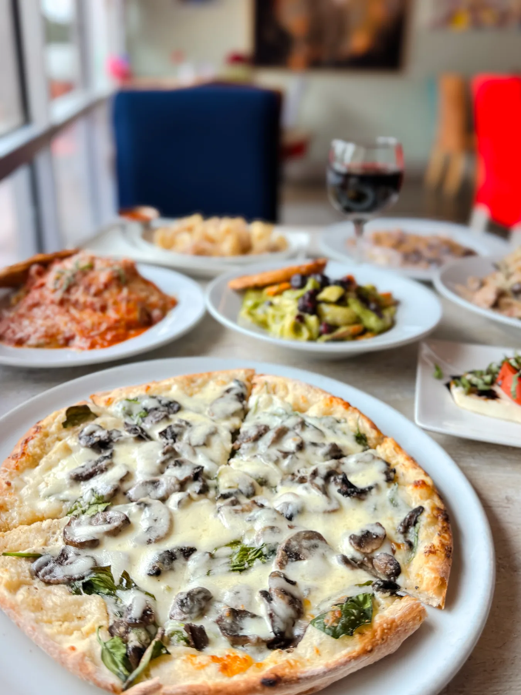
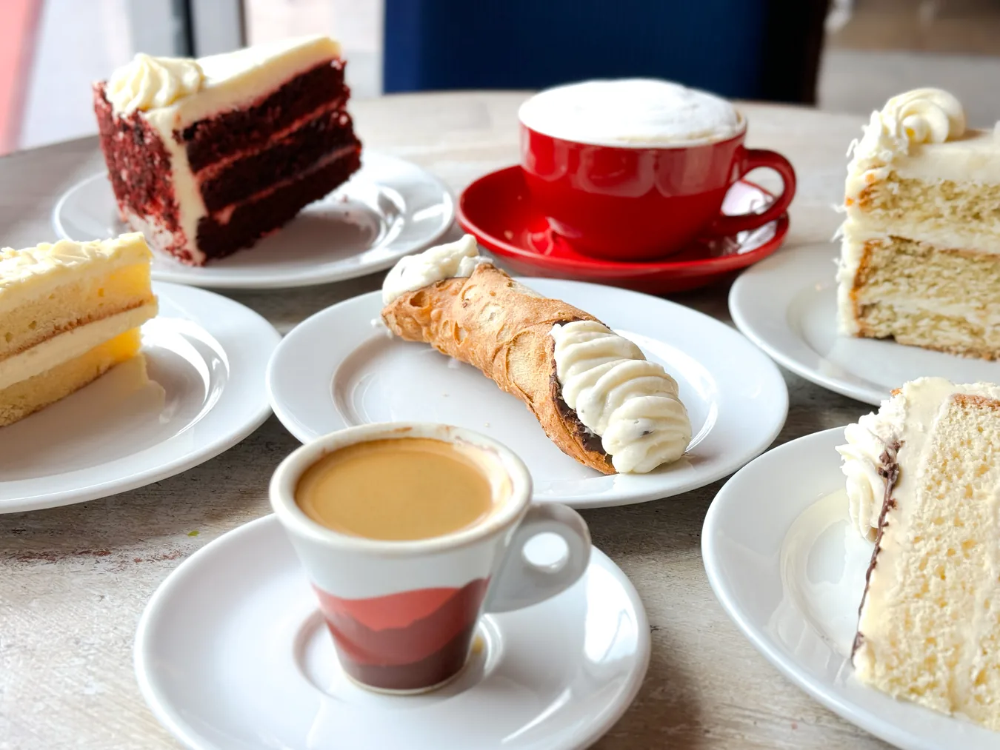

Gather beautifully.
Italian favorites for gatherings large and small. Let us help make the food the easy part.

Good food, great company.
From birthdays and family celebrations to office gatherings, Milano offers catering trays built for the moments worth sharing.
Our current catering menu describes trays designed to serve approximately six guests. Contact the team to confirm availability, portions, timing, and current pricing for your event.

Favorites, for a crowd.
Fettuccine & pasta
Alfredo chicken fettuccine, fettuccine carbonara, and penne bolognese are among the listed catering options.
Comforting favorites
Chicken Parmesan, Veal Marsala, Eggplant Parmesan, and other familiar favorites.
Something for everyone
Ask the team about the full catering selection, dietary needs, and planning for your guest count.
Menus and availability are subject to change. Please confirm current offerings and prices directly with the restaurant.
Have an occasion in mind?
Tell us what you’re celebrating and when. We’ll help you find the right menu for your gathering.
Start a catering inquiry